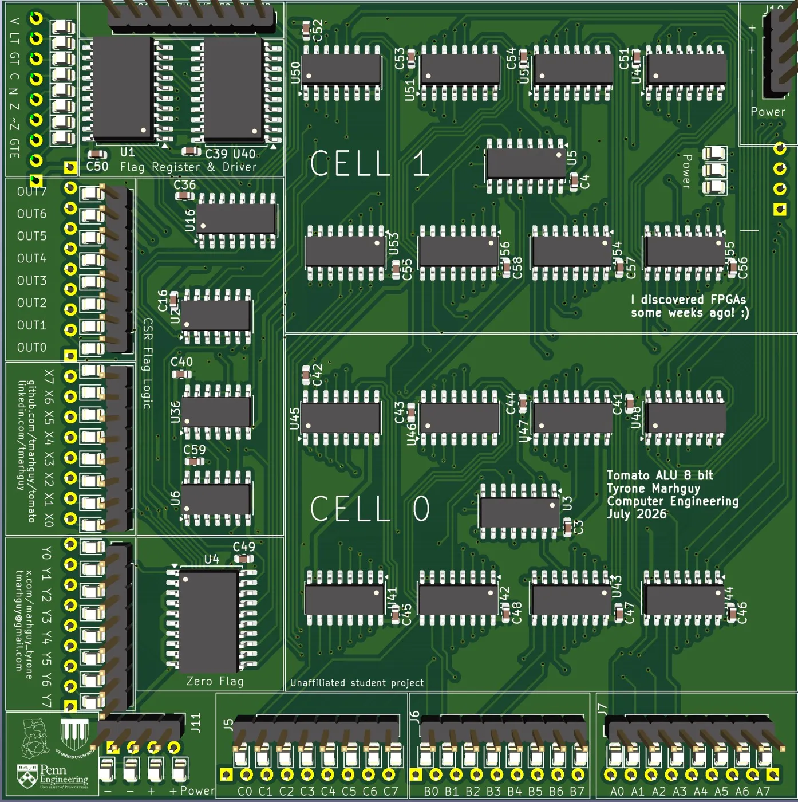
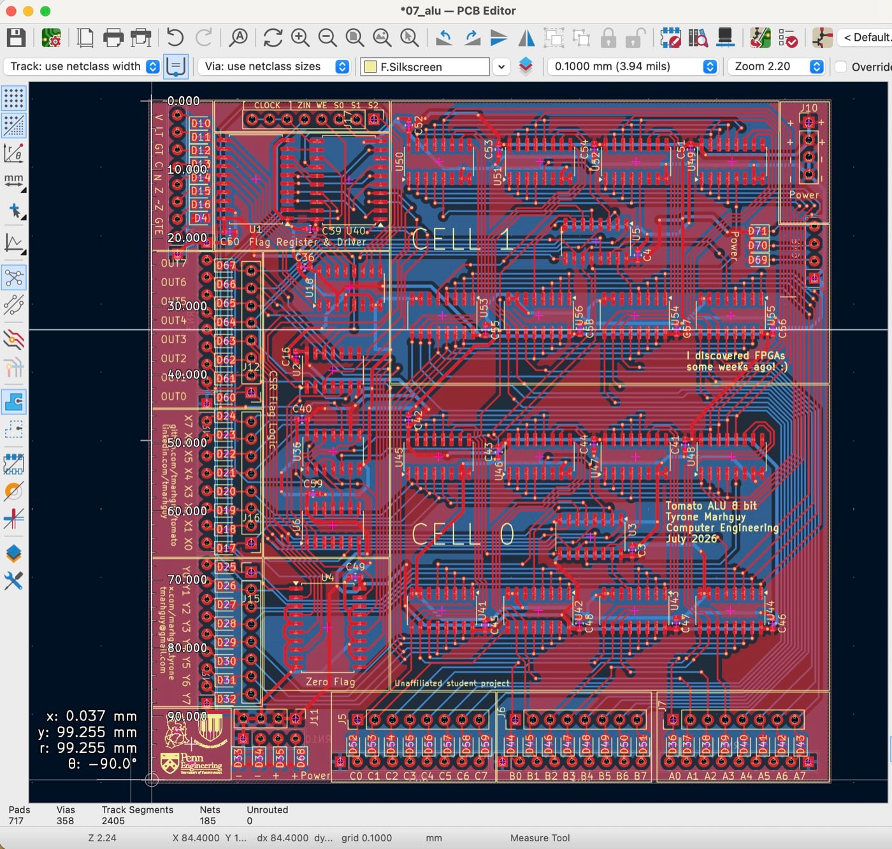

Lot 07 · ALU · On the bench
Dual-LUT 8-bit slice — the board that left the screen.
Two independent 3-input LUT planes per bit, summed through 74ACT283 nibble adders. One PCB is an 8-bit bring-up slice; stack two for 16-bit bench work. Muxes and adders are down on the first board.

alu_out[n] = ( lutA(a,b,c) + lutB(a,b,c) + cin ) & 1
This is the physical heart of Tomato’s 32-bit ALU—not the legacy 270 mm transistor 01_alu, but the 74ACT dual-LUT slice that actually went to fab. Each bit cell is a pair of 74ACT151 muxes programmed by 8-bit opcode buses, feeding a ripple-carry nibble adder. The topology mirrors the Digital verification ladder: alu_1b_X/Y → alu_4b × 2 → 8b on PCB.
At a glance
- Outline
- 99.95 × 99.80 mm ≈ 9975 mm²
- Logic ICs
- 25 per 8b (3.125 IC/bit)
- Key parts
- 17×151 · 2×283 · 688 · 377 · 541
- Route status
- 185 nets · 0 unrouted · DRC clean
- Copper
- 2 boards · 308 vias · 2404 segments
Hierarchy on the sheet
The KiCad tree matches simulation. Top sheet chains two alu_4b cells on CIN-MAIN / COUT-MAIN. Each nibble holds four X-plane and four Y-plane bit slices into one 74ACT283. A dedicated flags_logic sheet handles Z/N/C/V, LT/GT/GTE, and a 74ACT151 carry-select mux. led_unit is the opcode and operand lamp wall for bench debug; iopins maps headers for power, operands, opcodes, and control.


I/O and bring-up
Operands A[7:0], B[7:0], C[7:0] and result OUT[7:0] on headers. LUT programs via ALU_OPCODE_X0–X7 and ALU_OPCODE_Y0–Y7 (8-bit truth table per plane). Carry select CSEL0–CSEL2 feeds CIN-MAIN. Flags: FLAG_WE, latched Z/N/C/V and compare outputs. Suggested flow: program opcode buses for a known LUT pair (e.g. add = 0xAA / 0xCC), wiggle operands, read OUT on LEDs or scope—the same spirit as the full CPU in Digital. The first board is on the bench now; the Dual-LUT playground is still the same slice, bit by bit, before the lamps light.
Efficiency vs predecessor
Legacy 01_alu: 3,488 MOSFETs / 8b = 436 T/bit, ~9112 mm²/bit. 07_alu: ≈1247 mm²/bit and native boolean flexibility the transistor board never had. Journal carry-bypass on the discrete path was ≈16.5 MHz; this slice trades transistor romance for manufacturable copper.